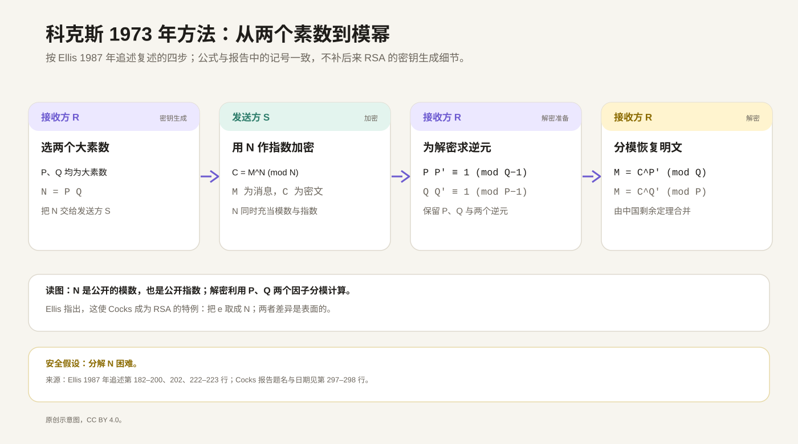
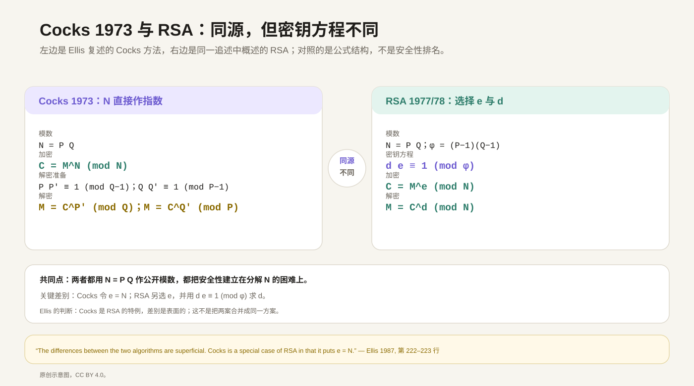
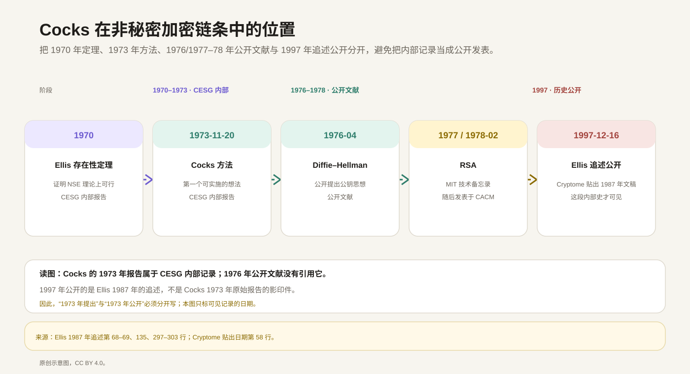

原理与机制
人物：克利福德·科克斯（Clifford Cocks）。本行是人物行，其原理对应 Cocks 在 CESG 内部提出第一个可实施的非秘密加密方法。Ellis 的追述印出「The first workable idea was put forward in reference 4 by Clifford Cocks.This is essentially the RSA」，参考文献第 4 条又把报告题名与日期印为「A Note on Non-Secret Encryption」与「20 November 1973.」。因此该条目把 Cocks 定位为 1973 年 11 月 20 日 CESG 报告的作者、该方法的提出者，不补来源未印出的生年、国籍、学历或任职经历，也不把这篇内部报告说成 1973 年已公开发表的论文。
为什么重要
方法结构由 Ellis 的追述逐步印出：接收方「R chooses two large primes P and Q」，「sends N=PQ to S」，发送方「C=M^N (mod N)」；解密时先求「PP' = 1 (mod Q-1)」与「QQ' = 1 (mod P-1)」，再「M = C^P' (mod Q)」与「M = C^Q' (mod P)」。因此该条目只按这套记号说明：N 同时是公开模数与公开指数，解密保留 P、Q 并分模计算；这是 Ellis 的复述，不是对 1973 年原报告文本的独立校勘，也不把后来 RSA 的密钥生成细节倒填进来。

应用与实例
用途边界由追述印出：Ellis 先写「practical implementations were left to others」，随后写「The first workable idea was put forward in reference 4 by Clifford Cocks」。这说明 Cocks 的方法在叙述中填补的是可实施想法这一步；留存件没有印出部署、标准采用、商业产品、公开网络或教学使用。因此该条目只把用途限定为 CESG 内部的理论记录与后续追述对象，不称该方法在 1973 年已部署，也不把可实施读成已投入使用。
边界与攻击面
边界要分两层读。第一层是安全假设：追述写「The security lies in the difficulty of factorising N.」，只把安全性系于分解 N 的困难，没有印出具体攻击、被破实例或威胁模型。第二层是与 RSA 的关系：追述写「The differences between the two algorithms are superficial.」与「Cocks is a special case of RSA in that it puts e = N」，并说保留分解、分模计算可提高解密效率。因此该条目不把分解困难写成已发生的攻击，也不把结构对照写成安全认证；只记录来源印出的假设与结构关系。

历史与背景
可断代的坐标由留存件印出：参考文献第 4 条把报告记作「A Note on Non-Secret Encryption」，日期为「20 November 1973.」；Ellis 的追述注明「This paper by James Ellis was written in 1987.」，并由 Cryptome 说明「Posted 16th December 1997.」。因此该条目把方法提出断到 1973 年 11 月 20 日，把这段历史可见断到 1987 年写作、1997 年 12 月 16 日贴出；不写其间未印出的分类、解密或机构公开过程，也不把 1997 年公开的追述当作 1973 年报告的影印件。

逐步示例与核验
角色关系模型
只登记四类关系：教育/任职机构、公开文本或专利、参与的标准/机器/事件、可核同行评价。每条关系都要有来源；没有来源的师承、奖项和私生活不进入模型。
参考出处
- Wikipedia search entry for 克利福德·科克斯. https://zh.wikipedia.org/w/index.php?search=%E5%85%8B%E5%88%A9%E7%A6%8F%E5%BE%B7%C2%B7%E7%A7%91%E5%85%8B%E6%96%AF
- MacTutor History of Mathematics Archive, University of St Andrews. https://mathshistory.st-andrews.ac.uk/